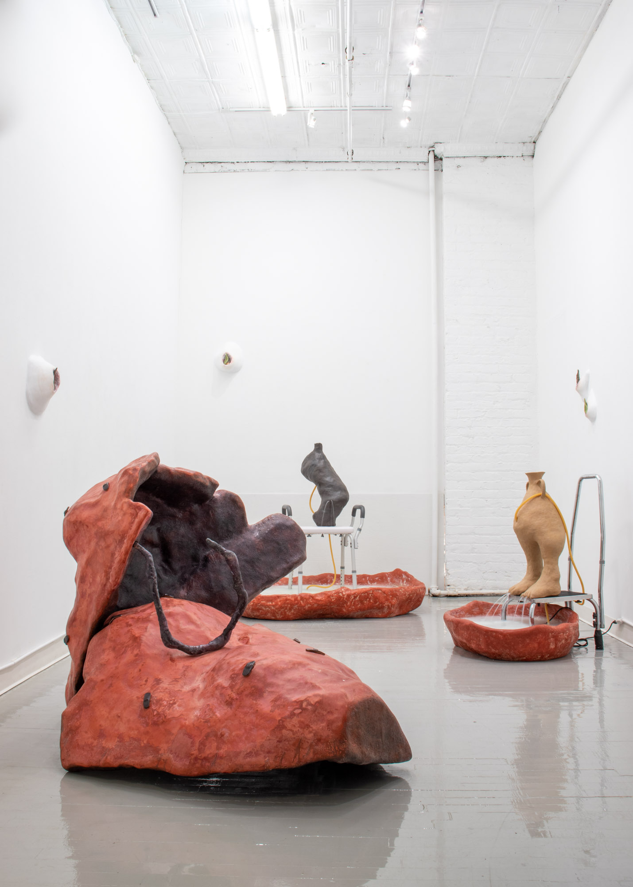

<div id="imagegrid" class="grid mb-5"
     data-masonry='{ "itemSelector": ".grid-item", "columnWidth": ".grid-sizer", "percentPosition": "true" }'>
  <div class="grid-sizer"></div>
  <div class="grid-item"><a href="work/lithophyte"></a></div>
  <div class="grid-item"><a href="work/coping-mechanism"></a></div>
  <div class="grid-item"><a href="work/speaking-with-lions"></a></div>
  <div class="grid-item"><a href="work/lubbert-as-muse"></a></div>
  <div class="grid-item"><a href="work/ceramic-fragments"></a></div>
  <div class="grid-item"><a href="work/tepal"></a></div>
  <div class="grid-item"><a href="work/cutting-the-stone"></a></div>
  <div class="grid-item"><a href="work/fountain"></a></div>
  <div class="grid-item"><a href="work/cortices"></a></div>
  <div class="grid-item"><a href="work/gameboard"></a></div>
  <div class="grid-item"><a href="work/meeting-stasis-halfway"></a></div>
  <div class="grid-item"><a href="work/well-im-a-tumbler"></a></div>
  <div class="grid-item"><a href="work/assessing-my-shape"></a></div>
  <div class="grid-item"><a href="work/aspirational-prosthetics"></a></div>
</div>